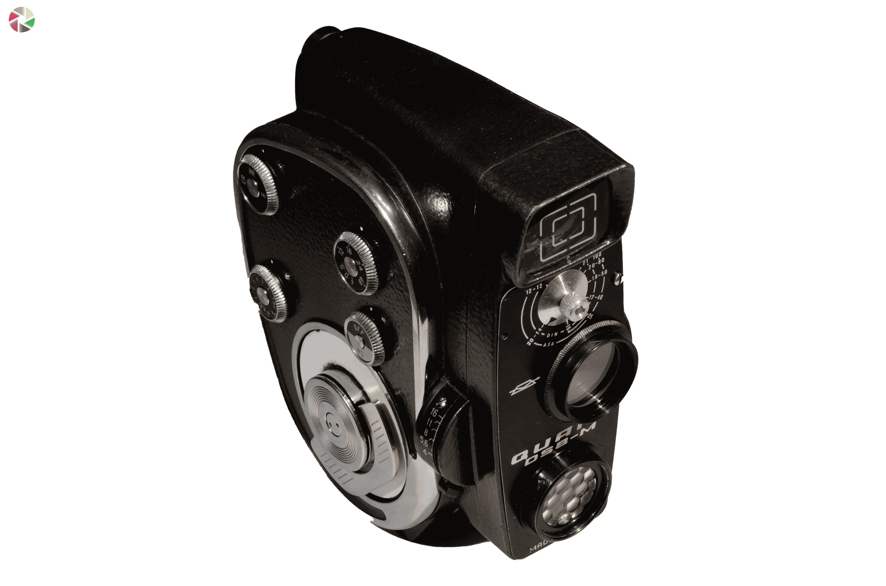
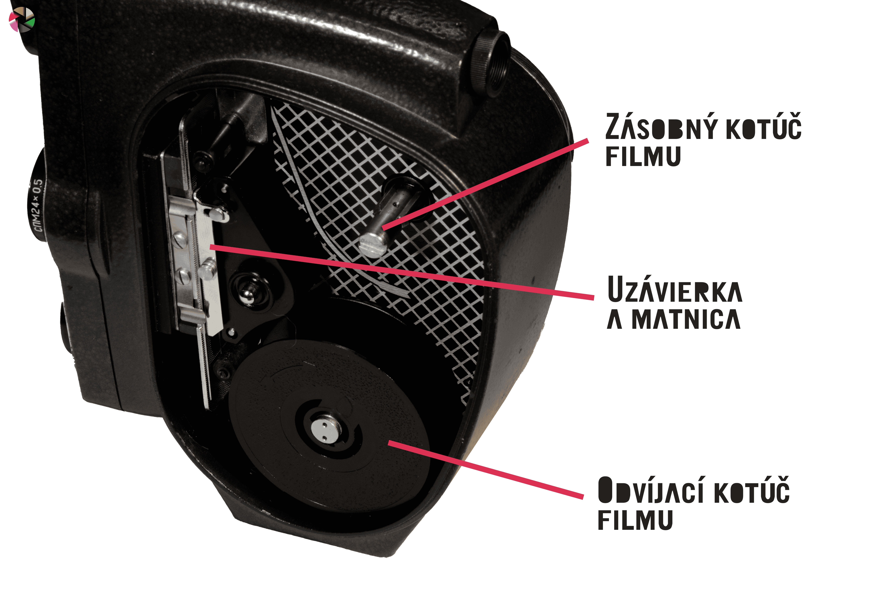
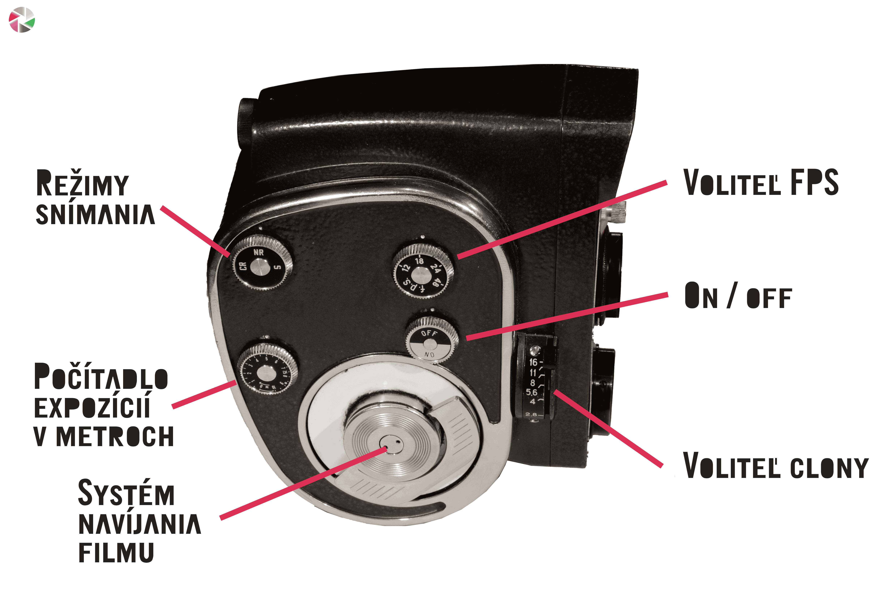
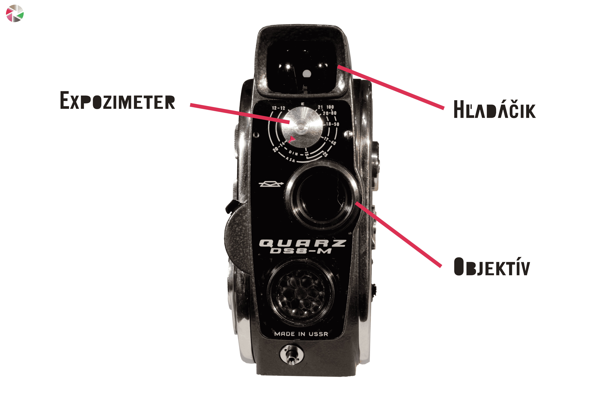
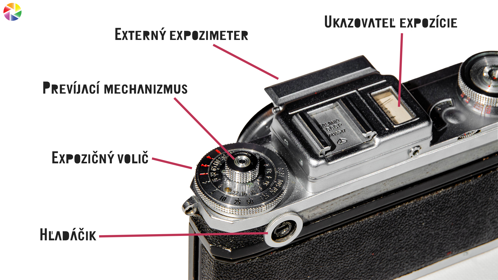
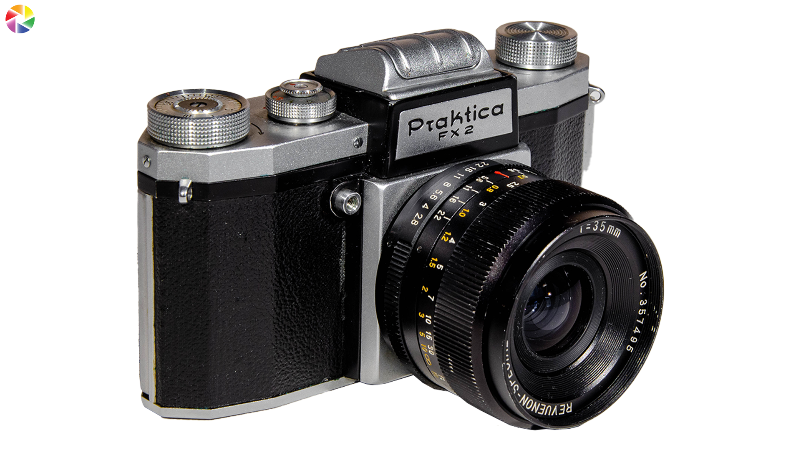
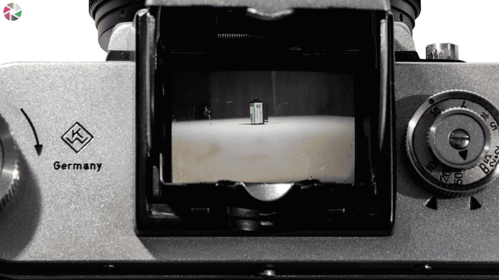
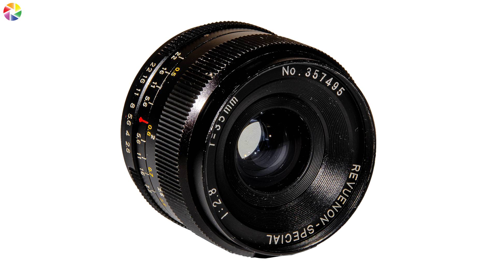

Recenzia Ilford HP5+ 400ISO / 14.10.2024
Ilford HP5+ISO : 400ISOTyp : MonocrhomatickýPoužitý fotoaparát : Kiev 4A, 50mm f/2Cena : 10€Stav : V dátume expirácie
Film, ktorý si veľmi rýchlo obľúbite. Najviac výrazný prvok na filme je silná zrnitosť. 400ISO zaručí zrno vhodné pre umelecké a portrétne fotografie. Pri každom pozretí je zrno naozaj dôkaz kvality filmu. Daľšia veľmi dôležitá vlastnosť je expozičná pružnosť. To znamená, že film má síce 400ISO, ale dokáže zvládnuť rôznorodé svetelné podmienky. Ostré slnko, ale aj silné mraky. V postprodukcií dokážete z tohoto filmu vytiahnuť maximum. Monochromatickosť pridáva zrnu presne tú atmosféru, akú na umelecké fotografie potrebujete.


Zhodnotenie filmu : Vysoko kvalitný film za nízku cenu.
Viac fotografií na film Ilford HP5+ si možete pozrieť v galérií
Recenzia Fujifilm Superia 200ISO / 14.10.2024
Fujifilm SuperiaISO : 200ISOTyp : FarebnýPoužitý fotoaparát : Kiev 4A, 50mm f/2Cena : 12€Stav : V dátume expirácie
Prvý film na ktorý som fotil bol farebný. Na jeseň vzniklo na tento film pár street fotografií. Po vyvolaní v špecializovanéj firme ma zaujala určitá farebnosť filmu. V zlých svetelných podmienkach alebo zlej expozící, film niektoré farby potlačí a iné naopak zvýrazní. Najviac sú viditeľné zelené a žlté odtiene farieb. 200 ISO ponúka veľmi jedmnú zrnitosť, avšak, pri nekvalitnom naskenovaní vám možú vzniknúť rôznofarebné pixelyna fotografiách. Kvalita fotografie sa ukázala až v externých podmienkach. V interiéry film zle pracoval s tieňami.


Zhodnotenie filmu : Prináša zaujimavú farebnosť za pomerne dostupnú cenu.
Viac fotografií na film Fujifilm Superia si možete pozrieť v galérií
Recenzia Quarz DS8-M / 15.7.2024
Quarz DS8-MProdukcia : 1968, ZSSRTyp : 8mm x 10m formátObjektv : 24mm, f/1.9FPS : 12 - 48Stav : Veľmi zachovalé




Recenzia Kiev 4A / 31.3.2024
Kiev 4AProdukcia : 1974, ZSSRTyp : 35mm formát, RangefinderObjektv : 50mm, f/2Stav : Znaky opotrebenia
Z analógových fotoaparátov bol Kiev 4A, môj prvý. Jedná sa o Rangefinder bez zrkadlovku, teda má hľadáčik, ale nemá spojitosť s objektívom. Je to veľká nevýhoda, pretože máte scénu trocha posunutú a nevidíte kompozíciu. Telo je veľmi jednoducho. Má len dve kolieska. Jedno slúži na nastavenie a navíjanie času a druhé je len ukazovateľ expozimetru. Na vrchu tohto kolieska je valec na navíjanie filmu naspäť do obalu. Poistka na navíjanie sa nachádza zo spodnej časti. Kryt sa otvára pomocou dvoch uzamykacých systémov. Kiev 4A má rozsah časov od 1/1250s až 2s plus funkcia B s aretáciou uzávierky. Ak chcete aretáciu uzávierky využiť stačí stlačiť spúšť a s tlačenú ju potočiť v proti smere hodinových ručiriek. Telo má aj samospúšť či sánky na príslušenstvo. Závit na statíve je 1/4 a obsahuje jeden vstup na blesk.
Expozimeter sa nachádza na hornej časti tela, ten však časom stratil svoje vlastnosti. To, že je na tele, je nevýhoda v tom zmysle, že, zachytáva a meria expozíciu viditeľným okom. Expozimetre vstavané vo vnútri tela merajú expozíciu skrz objektív a clonu. Viac o tomto konkrétnom expozimetri v článku Expozimeter

Objektív je 50mm so svetelnosťou od f/2 do f/22. Ostrenie nie je vsadené na objektívne, ale v tele. Pri spustí máme koliesko, ktoré posúva objektív od tela alebo k telu. To zaručí preostovanie. Ostriaci mechanizmus sa tiež nezachoval, ale funguje na princípe dvoch obrazoch. Na tele sú dve okienka, jedno je hľadáčik a druh je zrkadlo. Obrazy z oboch okienok sa naraz premietajú v hľadáčiku. Ak pri ostrení sa tieto obrázky spoja, tak máme zaostrené. Závit objektívu je určený len pre sériu Kiev, takže nevýhoda v obmedzenosti výberu objektívov.
Fotografie fotené na Kiev 4A nájdete v galérií
Recenzia Praktica FX2 / 30.3.2024
Praktica FX2Produkcia : 1956, NemeckoTyp : 35mm formát, SLRObjektv : 35mm, f/2.8Stav : Veľmi zachovalé

Prečo akurát tento fotoaparát? Konkrétny model FX2 je analóg so zrkadovou matnicou. Časté analógové fotoaparáty boli zrkadlovky s hľadáčikom, bez zrkadlovky, teda rangefindery alebo dvojoké so zrkadlovou matnicou. FX2-KA je zrkadlovka bez pentaprizmu, teda bez skladby zrkadiel, ktoré prevracajú obraz do hľadáčika. Scénu vidíme na matnici a ostríme pomocou výklopnej šošovky. Túto sústavu otvárame cez malé tlačidlo na zadnom kryte tela. Na matnicu sa pozeráme z výšky. Toto a zrkadlová prevrátenosť maternice komplikuje kompaktnosť fotoaparát a. To sa však dá odpustiť, z hľadiska toho, že to je vzácny typ tela.Telo obsahuje až dva vstupy na blesk. Nevýhoda tela je, že nemej sánky na príslušenstvo.

Koliesko času je samostatné a používa sa veľmi intuitívne. Iba sa zdvihne okraj kolieska a posunie na daný čas. Časy sú 1/500s, 1/2s a B. Navíjacie koliesko tiež funguje na princípe zodvihnutia a otáčania, k tomu patrí aj poistka navíjania, ktorá je umiestnená z hora. Koliesko na nastavenie spúšte sa jednoducho otáča pokiaľ vás mechanizmus nezastaví.
Praktica má mount M/49, veľmi bežný závit, ktorý zaručí široký výber objektívov. Objektív sa jednoducho šróbuje bez zacvaknutia. Uvoľňuje sa po držaním spúšte. Konkrétne náš objektív 35mm f/2.8, nemá najlepšiu, ale ani najhoršiu svetelnosť. To sa však kompenzuje širokouhlou ohniskovou vzdialenosťou. Ostrenie je plynulé od 0.5m po 10m + nekonečno. Clona sa otvára až po sltačení spúšte. Rozsah má od f/2.8 až po f/22.

Fotografie fotené na Prakticu FX2 nájdete v galérií